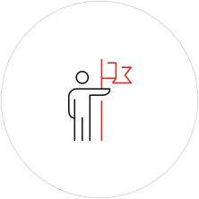
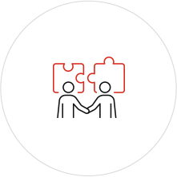
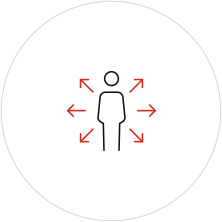
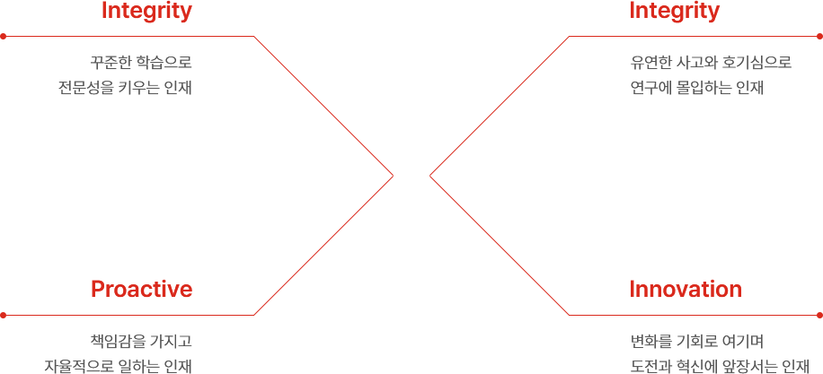

임직원 행동의 원칙이 되는 기업 핵심 가치를 바탕으로,
롯데중앙연구소와 함께 식품산업의 미래를 열어갈 인재를 찾고 있습니다.

Integrity
(성실과 성취)
끊임없이 배우고 꾸준하게
성장하여 전문성을 키운다

Proactive
(신뢰와 자율)
불필요한 규율을 제거하고
원칙으로 움직이는 자율을 추구한다

Innovation
(용기와 혁신)
실패를 통해 배울 수 있다고
믿으며 변화를 기회로 여긴다
